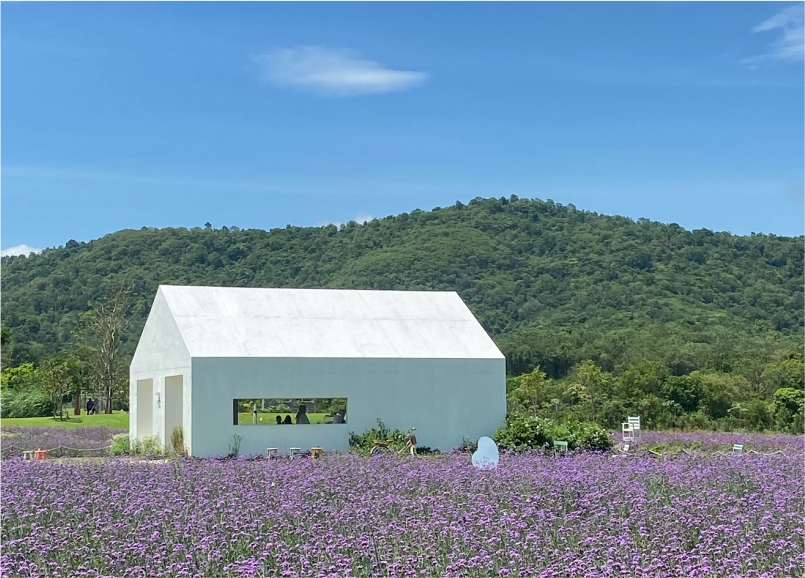
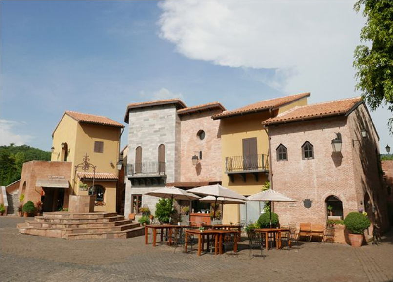
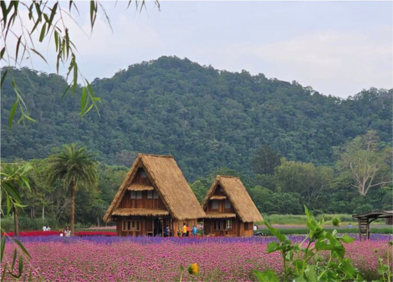

Petualangan Seru dari Bangkok ke Khao Yai
Pagi itu, Bangkok menyapa dengan langit cerah, meskipun hawa kota yang
sibuk masih terasa di sekeliling. Tubuh terasa sedikit lelah setelah
malam yang singkat, namun antusiasme untuk menjelajahi Khao Yai
melampaui segalanya. Setelah bersiap, saya dan kakak menuju titik
pertemuan yang telah disepakati, ditemani rasa harap-harap cemas akan
petualangan baru ini. Khao Yai, yang dikenal dengan pemandangan alamnya
yang memukau dan taman-taman bunganya yang menakjubkan, telah lama
menjadi salah satu destinasi impian kami.
Hari itu kami tidak sendiri. Rombongan kecil yang terdiri dari delapan
orang, sebagian besar perempuan, berkumpul untuk turut serta dalam
perjalanan. Meski ada kecanggungan kecil di awal karena kami baru
bertemu, suasana tetap terasa hangat. Kakak saya, dengan mudahnya
membaur dengan orang-orang baru, sementara saya lebih banyak mengamati,
mencoba meredakan kegugupan bertemu orang-orang yang belum saya kenal.
Ketika mobil van yang kami sewa akhirnya tiba setelah beberapa waktu
menunggu, ada sedikit rasa lega yang menyelinap. Perjalanan dari Bangkok
ke Khao Yai dimulai, melewati jalan-jalan kota yang perlahan berubah
menjadi pedesaan hijau dan bukit-bukit yang menjulang di kejauhan. Udara
semakin segar, dan pemandangan sawah serta rumah-rumah tradisional di
sepanjang jalan memberi kesan tenang yang perlahan-lahan mulai mengalir
ke dalam diri. Namun, tetap ada sedikit kekhawatiran tentang perjalanan
panjang di depan.
Destinasi pertama kami adalah Blossom Bloom, taman bunga yang sangat
luas. Saat tiba, keindahan hamparan bunga yang bermekaran menyapa mata,
seolah membawa kami masuk ke dalam dunia lain. Warna-warni bunga yang
cerah, berpadu dengan langit biru di atasnya, menciptakan pemandangan
yang luar biasa. Suasana damai dan sejuk dari angin pegunungan membuat
saya ingin terus berjalan-jalan di antara barisan bunga, tanpa henti.
Ada rasa kagum yang tumbuh, namun juga keinginan untuk terus menikmati
setiap detik tanpa terburu-buru. Pemandangan ini membuat waktu seolah
berhenti sejenak.

Ketika semua sudah puas menikmati taman dan mengambil foto, tiba-tiba
rasa panik menyebar. Salah satu anggota rombongan kehilangan tasnya.
Seketika ketenangan pagi itu berubah menjadi kepanikan kecil. Kami semua
mulai mencari, memeriksa setiap sudut taman, mencoba mengingat kembali
langkah-langkah sebelumnya. Ketegangan mulai terasa, membuat suasana
yang tadinya damai menjadi sedikit tegang. Namun, tak lama kemudian, tas
yang hilang ditemukan. Rasa lega menyelimuti, menggantikan kecemasan
yang sempat muncul. Senyum kembali terpancar di wajah kami, seolah
insiden kecil itu hanyalah gangguan sesaat dalam hari yang indah ini.
Perjalanan berlanjut menuju Primo Piazza, tempat yang terasa seperti
membawa kami keluar dari Thailand dan masuk ke pedesaan Eropa.
Bangunan-bangunan dengan gaya arsitektur klasik Eropa berdiri megah di
tengah lanskap yang hijau, menciptakan pemandangan yang begitu
fotogenik. Tidak ada yang lebih menarik selain mengabadikan momen ini
dalam bentuk gambar, dan kami pun dengan senang hati melakukannya.
Setiap sudut tempat ini menawarkan pemandangan yang memukau—dinding batu
yang kokoh, jendela-jendela kayu yang penuh karakter, dan jalanan
berbatu yang membawa imajinasi terbang jauh ke negara-negara di benua
Eropa. Suasana ini begitu memikat, memberikan kedamaian setelah insiden
di Blossom Bloom.

Di Primo Piazza, ada waktu untuk bersantai sejenak. Angin sepoi-sepoi
dan aroma kopi dari kafe kecil di sudut piazza menambah kesan nyaman.
Namun, di balik ketenangan ini, ada perasaan lelah yang mulai merayap.
Perjalanan panjang, meskipun penuh keindahan, tetap terasa menguras
energi. Tapi rasa puas selalu ada, seolah-olah keindahan tempat-tempat
ini cukup untuk membayar segala kelelahan yang mulai terasa.
Destinasi terakhir kami hari itu adalah Hokkaido Flower Park Khao Yai.
Saat kami tiba, mata langsung disuguhkan pemandangan yang menakjubkan:
hamparan bunga-bunga eksotis yang ditata sedemikian rupa, menciptakan
lautan warna-warni yang seolah tidak ada habisnya. Tempat ini adalah
salah satu surga bagi pecinta alam dan fotografi. Setiap langkah yang
diambil di taman ini terasa begitu ringan, seolah bunga-bunga itu
sendiri menyambut dengan penuh keramahan. Udara segar dan sejuk dari
pegunungan di kejauhan menambah kesan magis yang tidak mudah dilupakan.
Perasaan damai dan puas membanjiri pikiran saya, meskipun kaki mulai
terasa berat karena perjalanan yang panjang.

Perjalanan pulang ke Bangkok terasa lebih tenang, meskipun rasa lelah
makin terasa. Pemandangan perbukitan hijau di sepanjang jalan membuat
pikiran melayang, merenungi semua momen yang telah dilalui. Dalam
keheningan van yang melaju, semua anggota rombongan tampak tenggelam
dalam pikiran mereka masing-masing. Namun, tidak ada yang bisa menghapus
kepuasan di hati kami. Hari ini benar-benar menjadi salah satu
petualangan yang tak terlupakan.
Setibanya di Bangkok, saya dan kakak saya kembali ke hotel dengan tubuh
yang hampir tak bertenaga. Setelah mandi dan mengganti pakaian, kami
keluar sebentar untuk membeli makan malam dan mencuci pakaian di laundry
terdekat. Malam itu, kami beristirahat dengan perasaan lega dan puas,
bersiap untuk melanjutkan petualangan baru keesokan harinya di Wat Arun.
Setiap perjalanan memiliki kisahnya sendiri, dan Khao Yai akan selalu
menjadi salah satu kenangan paling berharga dalam perjalanan kami.
Dalam perjalanan yang penuh kejutan ini, ada pelajaran penting yang bisa diambil—setiap tantangan kecil membawa kita lebih dekat pada pengalaman yang berharga. Mulai dari kejadian kehilangan tas hingga menikmati keindahan alam di Khao Yai, semuanya adalah bagian dari petualangan yang membuat hidup lebih bermakna. Rasa lelah dari perjalanan seolah terbayar dengan pemandangan yang menakjubkan dan kepuasan dalam setiap langkah. Perjalanan ini mengingatkan kita bahwa setiap momen, baik itu sulit atau indah, memiliki arti tersendiri yang memperkaya hidup kita.